방송통신기사 (2017-09-23 기출문제)
1과목: 디지털 전자회로
1. 정류회로 중 평활회로에서 커패시터 입력형에 비해 인덕터 입력형의 특성으로 옳은 것은?
- 최대 역전압(Peak Inverse Voltage)이 높다.
- 소전류에 적합하다.
- 전압 변동률이 양호하다.
- 출력직류전압이 크다.
(정답률: 41%)

2. 다음은 트랜지스터 지결전압안정회로를 나타내었다. 부하전압을 5[V]로 유지하기 위한 제너다이오드의 항복전압은 얼마인가? (단, 트랜지스터의 베이스-이미터 전압 VBE=0.7[V]이고, 입력전압 Vin=10[V]~20[V]까지 변한다고 가정한다.)
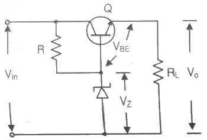
- 5[V]
- 5.7[V]
- 10[V]
- 10.5[V]
(정답률: 50%)
3. 공통 베이스(Common Base) 증폭기 회로에서 컬렉터 전류가 4.9[mA]이고, 이미터 전류가 5[mA]이었을 때 직류전류 증폭률은?
- 0.98
- 1.02
- 1.27
- 1.31
(정답률: 59%)
4. 다음 중 드레인 접지형 FET 증폭기에 대한 특성으로 틀린 것은? (단, FET의 피라미터 Am은 상호 전도도이다.)
- 입력 임피던스는 매우 크다.
- 전압 이득은 약 1이다.
- 출력은 입력과 역위상이다.
- 출력 임피던스는 약 1/Am 이다.
(정답률: 55%)
5. B급 푸시풀 증폭기의 최대 직류공급전력은? (단, Im은 최대 콜렉터 전류, Vcc는 공급 전압이다.)
- ImVcc
- 21ImVcc
- ImVcc/π
- 21ImVcc/π
(정답률: 54%)
6. 다음 B급 SEPP(Single-Ended Push-Pull) 증폭기에서 트랜지스터 1개당 최대 전력 손실은 약 몇 [W]인가?
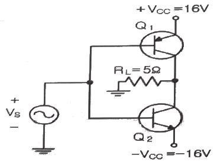
- 1.5[W]
- 2.5[W]
- 3.5[W]
- 4.5[W]
(정답률: 47%)
7. 정궤한(Positive Feedback)을 사용하는 발진회로에서 발진을 위한 궤환루프(Feedback Loop)의 조건은?
- 궤환루프의 이득은 없고, 위상천이가 180°이다.
- 궤환루프의 이득은 1보다 작고, 위상천이가 90°이다.
- 궤환루프의 이득은 1이고, 위상천이는 0°이다.
- 궤환루프의 이득은 1보다 크고, 위상천이는 180°이다.
(정답률: 56%)
8. 다음 그림과 같은 발진회로에서 높은 주파수의 동작에 적절한 발진회로 구현을 위한 리액턴스 조건은 무엇인가?
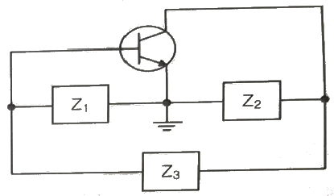
- Z1 = 용량성, Z2 = 용량성, Z3 = 용량성
- Z1 = 유도성, Z2 = 유도성, Z3 = 유도성
- Z1 = 유도성, Z2 = 용량성, Z3 = 용량성
- Z1 = 용량성, Z2 = 용량성, Z3 = 유도성
(정답률: 63%)
9. 다음 중 변조과정에 대한 설명으로 옳은 것은?
- 반송파에 정보신호(음성ㆍ화상ㆍ데이터 등)을 싣는 것을 변조라 한다.
- 변조된 높은 주파수의 파를 반송파라 한다.
- 변조는 소신호로 대전류를 제어하는 것이다.
- 저주파는 음성 신호파를 운반하는 역할을 하므로 피변조파라 한다.
(정답률: 63%)
10. 다음 중 반송파를 제거하는 변조방식은?
- 진폭 변조
- 펄스 변조
- 위상 변조
- 평형 변조
(정답률: 47%)
11. BPSK(Binary Phase Shift Keying) 변조방식의 에러 확률은 QPSK(Quadrature Phase Shift Keying) 변조방식의 에러 확률의 몇배인가?
- 1/2배
- 1/4배
- 2배
- 4배
(정답률: 44%)
12. 다음 중 불연속 펄스 변조방식의 종류가 아닌 것은?
- PAM(Pulse Amplitude Modulation)
- PNM(Pulse Number Modulation)
- ⊿M(Delta Modulation)
- PCM(Pulse Code Modulation)
(정답률: 42%)
13. 다음 그림과 같은 주기적인 펄스파형의 듀비티(Duty Ratio)는 얼마인가? (단, to = 30[μs], Y = 150[μs])
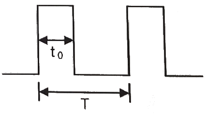
- 10[%]
- 12[%]
- 20[%]
- 22[%]
(정답률: 50%)
14. 다음 그림과 같은 회로의 명칭은?
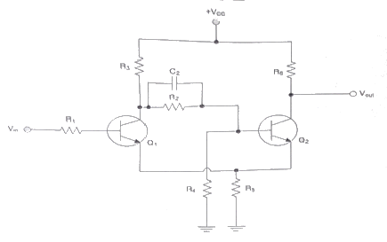
- 슈미트 트리거(Schmitt Trigger) 회로
- 차동증폭회로
- 푸시풀(Push-Pull) 증폭회로
- 부트스트랩(Bootstrap) 회로
(정답률: 58%)
15. 다음 중 2-out of-5 Code에 해당하지 않는 것은?
- 10010
- 11000
- 10001
- 11001
(정답률: 54%)
16. ８진수 (67)8을 16진수로 바르게 표기한 것은?
- (43)16
- (37)16
- (31)16
- (25)16
(정답률: 61%)
17. 불 대수식
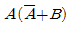
를 간단히 하면?- A
- B
- AB
- A+B
(정답률: 50%)
18. 카운터(Counter)를 이용하여 컨베이어 벨트를 통과하는 생산품의 개수를 파악하려고 한다. 최대 500개의 생산품 개수를 계산하기 위한 카운터를 플립플롭을 이용하여 제작할 경우 최소한 몇 개의 플립플롭이 필요한가?
- 5
- 7
- 9
- 11
(정답률: 58%)
19. 다음 소자 중에서 n개의 입력을 받아서 제어 신호에 의해 그 중 1개만을 선택하여 출력하는 것은?
- Multiplexer
- Demultiplexer
- Encoder
- Decoder
(정답률: 53%)
20. 다음 그림과 같은 회로의 명칭은?
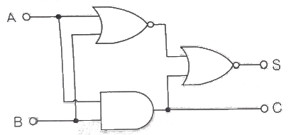
- 동시회로
- 반동시회로
- Full Adder
- Half Adder
(정답률: 48%)
2과목: 방송통신 기기
21. 디지털 HDTV 스튜디오 규격의 영상신호의 표본화 주파수로 가장 적절한 것은?
- 휘도신호(Y) : 74.25[MHz], 색차신호(R-Y) : 37.125[MHz], 색차신호 (B-Y) : 37.125[MHz]
- 휘도신호(Y) : 148.5[MHz], 색차신호(R-Y) : 74.25[MHz], 색차신호 (B-Y) : 74.25[MHz]
- 휘도신호(Y) : 13.5[MHz], 색차신호(R-Y) : 6.75[MHz], 색차신호 (B-Y) : 6.75[MHz]
- 휘도신호(Y) : 13.5[MHz], 색차신호(R-Y) : 13.5[MHz], 색차신호 (B-Y) : 13.5[MHz]
(정답률: 71%)
22. 광섬유 케이블은 물질 사이에서 일어나는 빛의 어떤 성질을 이용한 것인가?
- 전반사
- 회절
- 굴절
- 입자성
(정답률: 80%)
23. VTR 편집과정에서 테이프의 속도로 인해 발생하는 오차를 방지하기 위한 장비는?
- 테이프 오류 고정기(TEC)
- 전자 변속기(ESC)
- 영상 디지털 교정기(DVC)
- 시간 축 교정장치(TBC)
(정답률: 76%)
24. 우리나라 지상파 디지털멀티미디어방송(T-DMB)의 송신 블럭의 주파수 대역은?
- 약 200[kHz]
- 약 1[kHz]
- 약 1.5[kHz]
- 약 6[kHz]
(정답률: 60%)
25. 다음 중 지상파 방송과 비교한 위성방송의 특징이 아닌 것은?
- 전송 주파수가 낮다.
- 많은 중계소를 설치하지 않아도 된다.
- 탄일 전파로 넓은 지역에 방송할 수 있다.
- 사용 주파수대역기 넓다.
(정답률: 75%)
26. 다음 중 디지털 음악 방송(Digital Sound Broadcasting)의 특징이 아닌 것은?
- 고품질 음성을 복수로 전송할 수 있다.
- 자동차와 같이 이동 수신시에 멀티패스나 페이딩에 비교적 강한 방식이다.
- ATSC 방송방식에 비해 전송 데이터 용량이 크므로 잡음이 없다.
- 음성은 물론 데이터나 화상의 전송이 가능하다.
(정답률: 59%)
27. 디지털방송의 편집 환경에서 사용되는 스토리지가 아닌 것은?
- 공유 스토리지
- 검색 스토리지
- 아카이브 스토리지
- 스트리밍 스토리지
(정답률: 71%)
28. 다음 중 동화상 및 정지화상에 사용되는 영상 압축 방식이 아닌 것은?
- AC-3
- JPEG
- MPEG4
- H.261
(정답률: 70%)
29. 비디오 스위처(Video Switcher)의 기능 중 현재의 영상과 다음에 출력하고자 하는 영상을 혼합(Mix)하여 부드럽게 전환하는 것을 무엇이라 하는가?
- 디졸브(Dissolve)
- 혼합(Mix)
- 컷(Cut)
- 프리뷰(Preview)
(정답률: 75%)
30. 야기안테나에서 안테나의 맨 뒷부분에 위치하며, 안테나 후방의 불필요한 전파유입을 막아 이중상을 경감하는 역할을 하는 것은/.
- 도파기
- 방사기
- 급전부
- 반사기
(정답률: 67%)
31. 접시안테나를 통해 모인 10[GHz]대의 초고주파신호를 1[GHz]대의 중간주파수 신호로 변환하는 장치는?
- LNB
- Set-top Box
- Encoder
- BPF
(정답률: 79%)
32. 다음 중 CATV 전송매체에 대한 설명으로 옳지 않은 것은?
- 마이크로웨이브는 사용 주파수 대역에 제한이 없다.
- 광섬유케이블이 동축케이블에 비해 전송대역이 넓다.
- 광섬유케이블이 마이크로웨이브에 비해 보안성이 높다.
- 광섬유케이블이 동축케이블에 비해 누화가 적다.
(정답률: 79%)
33. 아날로그 케이블 방송 채널 4번의 경우 채널의 폭이 66[MHz]~72[MHz]라 할 때, 영상반송파와 음성 반송파의 주파수를 바르게 나타낸 것은?
- 67.25[MHz] 71.75[MHz]
- 66[MHz], 67.25[MHz]
- 72[MHz], 66[MHz]
- 67.25[MHz], 72[MHz]
(정답률: 79%)
34. CATV 전송로에 증폭 기능이 없는 4분배기를 연결하였을 때, 입력에 비해 출력 손실값은 몇 [dB] 감소하는가? (단, 단자 손실값은 제외한다.)
- -3.02[dB]
- -4.02[dB]
- -5.02[dB]
- -6.02[dB]
(정답률: 69%)
35. 다음 중 인터넷방송을 구축하기 위한 장비별로 구성이 잘못된 것은?
- 영상장비 : 디지털 카메라, 디지털 편집장비, 인코딩 스테이션 등
- 음향장비 : 마이크, 녹음기, 오디오, Mixer 등
- 정보저장장비 : Digital Video, Recorder, VPD Server, Switching Hub System 등
- 네트워크장비 : 인터넷 전용선, LAN Cable 등
(정답률: 81%)
36. 다음 중 지상파 DMB에 관련된 설명에 해당되는 것은?
- 256QAM 변조방식이다.
- 이동성이 강화된 방송미디어이다.
- Digital Mobile Broadcasting의 약자이다.
- 단일 캐리어 전송방식이다.
(정답률: 72%)
37. 방송신호 측정 시 송신기 입력 전압이 0.5[V]일 때 출력 전압이 50[V]였다면 송신기의 전압이득은 몇 [dB]인가?
- 10
- 20
- 30
- 40
(정답률: 58%)
38. 방송기기 중에 정해진 시각에 정해진 프로그램을 정해진 지역으로 송출하는 기능을 갖고 있는 장비는?
- APC(Automatic Program Controller)
- STL(Studio Transmitter Link)
- SNG(Satellite News Gathering)
- 모니터링 시스템
(정답률: 72%)
39. 다음 중 MPEG 신호분석기에서 확인할 수 없는 항목은?
- Transport Stream의 전송률
- PAT의 반복주기
- 피크대 평균 전력비
- A/V 신호의 PID값
(정답률: 64%)
40. 다음 중 AM 송신기의 비직선 왜곡을 감소시키는 방법이 아닌 것은?
- 증폭도를 높인다.
- 바이어스 설정을 직선부에서 취한다.
- 부궤환을 걸어 왜곡을 축소한다.
- 증폭방식으로 푸시풀 증폭기를 사용한다.
(정답률: 54%)
3과목: 방송미디어 공학
41. 다음 중 송신소의 송신장치에서 송신용 안테나까지 RF신호를 전송해주는 급전선을 선택하기 위한 주요 파라미터로 가장 거리가 먼 것은?
- 사용주파수에서의 반사계수
- 스프리어스(Spurious) 발사
- 사용길이에 대한 감쇠량
- 사용 RF 전력 설정
(정답률: 63%)
42. 중파방송의 주파수 범위는 526.5[kHz]~1,606.5[kHz]이다. 이 중파 방송에서 채널당 주파수대역이 9[kHz]인 경우 최대 사용 채널 수는?
- 120개
- 130개
- 100개
- 150개
(정답률: 75%)
43. 다음 중 디지털방송에 대한 설명으로 가장 거리가 먼 것은?
- 잡음의 영향증가
- 화질과 음질의 향상
- 다채널화
- 미디어의 다변화
(정답률: 78%)
44. 음성신호 표본화주파수가 48[kHz], 2ch 방식, 16비트 양자화인 경우 전송률은 몇 [Mbps]인가?
- 1.236
- 1.336
- 1.456
- 1.536
(정답률: 67%)
45. 녹음을 위한 마이크의 설치방식 중 원 포인트 잡음방식의 장점으로 보기 어려운 것은?
- 사용 녹음장비를 상대적으로 적게 사용할 수 있다.
- 연주 자체에서 밸런스에 문제가 있을 시 녹음 및 편집 과정에서 수정이 용이하다.
- 마이크끼리의 간섭이 적어서 소리가 혼탁하지 않다.
- 콘서트 홀 내의 각처에서 반사된 간접음도 동시에 집음할 수 있다.
(정답률: 65%)
46. 다음 중 음압 레벨(SPL) 측정에 적용디는 기준 음압으로 가장 적절한 것은?
- 0.0002[dyne/cm2]
- 0.0004[dyne/cm2]
- 0.0006[dyne/cm2]
- 0.0008[dyne/cm2]
(정답률: 67%)
47. 다음 중 컬러 비스트(Color burst) 신호의 역할은?
- 포화도 조절
- 오디오 크기 조절
- 휘도 조절
- 색위상 기준
(정답률: 63%)
48. 다음 중 Nyquist Filter에 대한 설명으로 틀린 것은?
- 대역이 제한된 주파수영역에서 심벌간 간섭이 발생하지 않는 이상적인 시간영역 파형은 Sinc펄스 형태이다.
- Nyquis필터는 점유대역폭이 가장 넓고 시간영역에서 필터의 구현이 용이하다.
- 실제 통신시스템에서는 Raised Cosine Filter를 사용하여 r(Roll-off Factor)값을 조정하여 사용한다.
- r=0인 경우가 Nyquist Filter이며, r값이 커지면 시간영역에서 구현이 용이하나 주파수 효율이 떨어진다.
(정답률: 69%)
49. 다음 중 직사광에 해당하는 빛을 내며 빛의 방향성, 명암이나 그림자에 의한 입체감 등을 표현하기 위한 조명기구로 가장 적절한 것은?
- 스포트 라이트(Spot Light)
- 플러드 라이트(Flood Light)
- 베이스 라이트(Base Light)
- 이펙트 라이트(Effect Light)
(정답률: 78%)
50. 다음 중 적절한 노출을 결정하기 위해 흑백에서의 연속적인 밝기 톤을 10단계의 표본으로 만들어 놓은 것을 지칭하는 용어는?
- 존 시스템(Zone System)
- 조명 제어 시스템(Lighting Control System)
- 컬러 시스템(Color System)
- F 넘버 시스템(F Number System)
(정답률: 68%)
51. 방송의 디지털화로 인한 현상과 가장 거리가 먼 것은 무엇인가?
- 다양화
- 단방향화
- 개인화
- 네트워크화
(정답률: 78%)
52. 다음 방송 미디어 전송 매체가 무선이 아닌 것은?
- 지상파 DTV 방송
- T-DMB
- FM 라디어 방송
- IPTV 방송
(정답률: 75%)
53. 지상파, 위성, 케이블 등 기존 방송망을 이용하여 방송 프로그램 관련정보, 생활정보, 인터넷접속, 전자상거래 등을 제공하는 새로운 형태의 방송서비스는?
- 데이터 방송
- 인터넷 방송
- 종합유선 방송
- 위성 방송
(정답률: 65%)
54. 다음 중 방송 콘텐츠 편집에 활용 가능한 도구로 적절치 않은 것은?
- 영상혼합기(VMU)
- 음성혼합기(AMU)
- 벡터스코프
- 에프터이펙트
(정답률: 78%)
55. 다음 중 효율적인 압축방법 선택 시 고려사항이 아닌 것은?
- 압축률
- 압축 및 복원시간
- 압축 알고리즘의 복잡도
- 표중화 단체
(정답률: 68%)
56. 우리나라 지상파 HDTV 화면의 종횡비(Aspect Ratio)는?
- 5:3
- 4:3
- 16:9
- 19:16
(정답률: 81%)
57. 다음 중 HDTV 중계방송 차량에 설치되는 보편적인 시스템으로 틀린 것은?
- 8-VSB 송신기
- ATSC Encoder
- Master Contro; Switcher
- Up/Down Converter
(정답률: 69%)
58. 양자화기의 비트수가 증가할 때마다 부호화에 따르는 양자화 오차인 SQNR (Sifnal-to-Quantization Noise Ratio)의 감소량은 얼마인가?
- 2[dB]
- 3[dB]
- 4[dB]
- 6[dB]
(정답률: 67%)
59. 다음 중 양자화를 가장 잘 표현한 것은?
- 샘플링 주파수의 선정
- 샘플링 신호를 디지털 비트열로 표시
- 디지털 신호의 아날로그화
- 원신호의 복원
(정답률: 71%)
60. 다음 중 가변길이 부호화(Variable Length Coding)는?
- 그레이 코드
- 허프만 코드
- 해밍 코드
- 3초과 코드
(정답률: 67%)
4과목: 방송통신 시스템
61. 주파수 영역에서 신호의 스펙트럼이 겹쳐서 원 신호의 정상 복원이 불가능해지는 것을 무엇이라고 하는가?
- 수신기 비트에러
- 수신기 잡음
- 산탄잡음
- 에일리어싱(Aliasing)
(정답률: 77%)
62. 다음 중 디지털 변조방식으로 옳지 않은 것은?
- ASK
- PSK
- FM
- FSK
(정답률: 81%)
63. 다음 문장과 같은 조건의 반송파 주파수는?
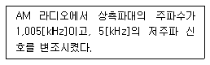
- 1,100[kHz]
- 1,0⑤[kHz]
- 1,000[kHz]
- 995[kHz]
(정답률: 71%)
64. 다음 중 방송국의 안테나공급전력이 2[kW]에서 50[kW]로 증가되고, 거리가 일정할 경우에 전계 강도는 몇 배가 되는가?
- 5배
- 25배
- 1/5배
- 1/25배
(정답률: 68%)
65. 다음 문장에서 설명하고 있는 것으로 옳은 것은?
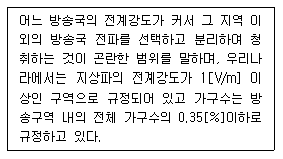
- 서비스에어리어(Service Area)
- 블랭킷에어리어(Blanket Area)
- 최고사용주파수(Maximum Usable Frequency)
- 최적운용주파수(Frequency Of Optimum Traffic)
(정답률: 77%)
66. 다음 중 AM 표준방송에 대한 설명으로 틀린 것은?
- 중파대 주파수를 사용한다.
- 진폭변조를 사용한다.
- FM에 비해 외래잡음에 강하고 다이나믹 레인지가 넓다.
- 수신기는 수퍼헤테로다인 방식을 사용한다.
(정답률: 75%)
67. 다음 중 점유대역폭에 따라 규정하고 있는 FM송신기의 최대 주파수 편이는?
- ±50[kHz]
- ±70[kHz]
- ±75[kHz]
- ±85[kHz]
(정답률: 76%)
68. 다음 중 수퍼헤테로다인(SuperHeterodyne) 수신기의 장점으로 옳지 않은 것은?
- 고감도이다.
- 신호대 잡음비가 좋다.
- 선택도가 향상된다.
- 전원전압의 변동에 강하다.
(정답률: 53%)
69. 다음 중 TV 주조정실에서 사용되는 방송장비에 해당하는 것은?
- 편집기
- Master Switcher
- 송신기
- 카메라
(정답률: 74%)
70. 다음 중 지상파 디지털방송(DTV) 시스템의 중계 구성요소로서 변조기의 변조된 IF 신호를 중계기의 채널 주파수로 변환하여 파워앰프의 입력부까지 원하는 신호를 전송해주는 부분을 무엇이라 하는가?
- Exciter
- 왜곡보상부
- HPA
- Controller
(정답률: 77%)
71. 다음 중 지상파 DTV 방송 방식으로 옳지 않은 것은?
- DVB-T
- ATSC
- ISDB-T
- NTSC
(정답률: 55%)
72. 서로 다른 파장의 광신호를 하나의 광섬유로 동시에 전송하는 방식을 무엇이라 하는가?
- 시분할 다중화방식
- 파장분할 다중화방식
- 주파수분할 다중화방식
- 코드분할 다중화방식
(정답률: 73%)
73. 다음 중 CATV 시스템에서 Head End의 주요 기능으로 옳지 않은 것은?
- 변복조 기능
- 감시제어 기능
- 자체방송 송신 기능
- 중계전송 기능
(정답률: 56%)
74. 다음 중 CATV 시스템의 전송로와 가장 거리가 먼 것은?
- 광케이블
- 동축케이블
- 광 및 동축케이블
- UTP케이블
(정답률: 78%)
75. 다음 중 위성방송에서 전파손실의 가장 큰 원인으로 적합한 것은?
- 자유공간 손실
- 감쇠와 흡수
- 산한과 회절
- 다중경로 손실
(정답률: 78%)
76. 다음 중 디지털 위성방송 송신시스템의 구성요소가 아닌 것은?
- MPEG-2 인코더
- 다중화기
- 등화기
- 저잡음증폭기
(정답률: 63%)
77. 지상파 DMA에서 사용하는 QPSK 변조방식은 하나의 부호에 몇 개의 비트가 형단되는가?
- 2
- 4
- 16
- 64
(정답률: 72%)
78. 중파 송신설비의 송신기를 조정하거나 시험하며 장시 보수를 위해 필요한 측정기가 아닌 것은?
- 임피던스 브리지 미터(Impedance Bridge Meter)
- RF 오실레이터(RF Oscillator)
- 왜곡 분석기(Distortion Analyzer)
- 파형분석기(Waveform Monitor)
(정답률: 49%)
79. 낙뢰나 전력설비의 누설에 의한 옥외의 선로 계통에 생긴 이상전압의 진입을 막고 옥내의 전력 계통으로부터 누설된 전력이 CATV 시설로 유출되는 것을 방지하기 위해 보안기를 설치한다. 보안기 설치 위치가 맞는 것은?
- CATV의 내선설비와 가입자댁내 설비 사이
- CATV의 외선설비와 가입자댁내 설비 사이
- CATV의 내선설비와 CATV의 내선설비 사이
- CATV의 전원공급기
(정답률: 73%)
80. 다음 설명에 해당되는 장비는?
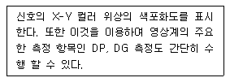
- 오실로스코프(Oscilloscope)
- DVMCI(Digital Video Media Control Interface)
- 벡터 스코프(Vector Scope)
- 파형분석기(Waveform Monitor)
(정답률: 73%)
5과목: 전자계산기 일반 및 방송설비기준
81. CPU가 명령문을 수행하는 순서는?
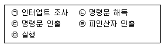
- ㉢-㉠-㉡-㉣-㉤
- ㉢-㉡-㉣-㉤-㉠
- ㉡-㉢-㉣-㉤-㉠
- ㉣-㉢-㉡-㉤-㉠
(정답률: 58%)
82. 주소영역(Address Space)이 1[GB]인 컴퓨터가 있다. 이 컴퓨터의 MAR(Memory Address Register)의 크기는 얼마인가?
- 30[bit]
- 30[Byte]
- 32[bit]
- 32[Byte]
(정답률: 52%)
83. 8비트에 저장된 값 10010111을 16비트로 확장한 결과 값은? (단, 가장 왼쪽의 비트는 부호(Sign)를 나타낸다.)
- 0000000010010111
- 1000000010010111
- 1001011100000000
- 1111111110010111
(정답률: 53%)
84. 다음 중 오류검출과 오류교정까지도 가능한 코드는?
- Hamming Code
- Biquinary Code
- 2-out of-5 Code
- EBCDIC Code
(정답률: 76%)
85. 다음 중 사용자가 단말기에서 여러 프로그램을 동시에 실행시키는 기법은?
- 스풀링(Spooling)
- 다중 프로그래밍(Multi-programming)
- 다중 처리기(Multi-processor)
- 다중 태스킹(Multi-tasking)
(정답률: 62%)
86. 다음 문장에서 설명하는 운영체제의 유형은?
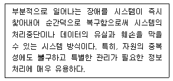
- 시분할 시스템(Time-sharing System)
- 다중 처리(Multi-processing)
- 다중 프로그래밍(Multi-programming)
- 결함허용 시스템(Fault-tolerant System)
(정답률: 63%)
87. 다음 지문에서 설명하고 있는 소프트웨어의 종류는?
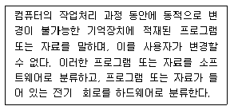
- 펌웨어
- 시스템 소프트웨어
- 응용 소프트웨어
- 디자이스 드라이버
(정답률: 71%)
88. 다음 지문의 괄호 안에 들어갈 용어를 올바르게 나열한 것은?
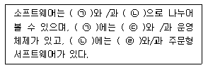
- ㉠ 응용소프트웨어 ㉡ 시스템소프트웨어 ㉢ 유틸리티 ㉣ 패키지
- ㉠ 시스템소프트웨어 ㉡ 응용소프트웨어 ㉢ 유틸리티 ㉣ 패키지
- ㉠ 시스템소프트웨어 ㉡ 유틸리티 ㉢ 응용소프트웨어 ㉣ 패키지
- ㉠ 응용소프트웨어 ㉡ 시스템소프트웨어 ㉢ 패키지 ㉣ 유틸리티
(정답률: 65%)
89. 다음 지문이 설명하고 있는 것은?
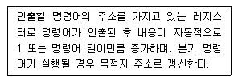
- 기억 장치 버퍼 레지스터
- 누산기
- 프로그램 카운터
- 명령 레지스터
(정답률: 54%)
90. 다음 중 마이크로프로그램에 의한 마이크로 오퍼레이션의 동작으로 틀린 것은?
- 주기억 장치에서 명령어 인출하는 동작
- 오퍼랜드의 유효 주소를 계산하는 동작
- 지정딘 연산을 수행하는 동작
- 다음 단계의 주소를 결정하는 동작
(정답률: 53%)
91. 방송을 양호하게 수신할 구 있는 구역으로 전계강도가 과학기술정보 통신부장관이 정하여 고시하는 기준 이상인 구역은?
- 방송구역
- 블랭킷에어리어
- 전파구역
- 셀에어리어
(정답률: 72%)
92. 다음 중 방송법에 의한 지상파방송사업이란?
- 방송을 목적으로 하는 지상의 무선국을 관리ㆍ운영하며 이를 이용하여 방송을 행하는 사업
- 전송ㆍ선로 시설을 이용하여 행하는 다채널방송을 행하는 사업
- 인공위성의 무선국을 이용하여 행하는 방송사업
- 중계유선방송을 재전송하는 방송사업
(정답률: 80%)
93. 다음 중 정보통신공사업법에서 규정하는 공사의 종류 가운데 방송국 설비공사가 아닌 것은?
- 영상ㆍ음향설비 공사
- 송출설비 공사
- 방송관리시스템설비 공사
- 무선 CATV(MMDS, LMDS)설비 공사
(정답률: 68%)
94. 다음 중 과학기술정보통신부장관이 무선국의 개설 허가 심사 시 고려할 사항이 아닌 것은?
- 주파수지정이 가능한지의 여부
- 무선국운영자의 채무 상태 여부
- 자격ㆍ정원 배치 기준에 적합한지의 여부
- 기술기준에 적합한지의 여부
(정답률: 76%)
95. 다음 중 종합유선방송국설비와 전송선로설비의 분계점에 대한 설명으로 잘못된 것은?
- 전송선로설비가 동축케이블인 경우 : 진폭변조기와 동축케이블의 최초 접속점
- 전송선로설비가 UTP케이블인 경우 : 진폭변조기와 UTP케이블의 최초 접속점
- 전송선로설비가 무선방식인 경우 : 진폭ㆍ주파수변조기와 무선송신기의 최초 접속점
- 전송선로설비가 광케이블인 경우 : 진폭ㆍ주파수변조기와 광송신기의 최초 접속점
(정답률: 64%)
96. 종합유선 방송사업자가 확보하여야 할 종사자의 자격과 정원 중 3만 가입자 미만일 때의 자격과 정원은?
- 방송통신산업기사 1명 이상
- 방송통신기능사 2명 이상
- 무선설비기능사 1명 이상
- 통신선로기능사 2명 이상
(정답률: 69%)
97. 유선방송국용 전원설비는 최대로 사용되는 때의 전력을 안정적으로 공급할 수 있는 용량을 가진 것으로서 전압ㆍ전류의 변동 허용범우는 몇 [%] 이내로 유지할 수 있는 것이어야 하는가?
- ±1
- ±5
- ±10
- ±15
(정답률: 71%)
98. 종합유선방송사업자별 시설 중 망사업자(NO) 시설이 아닌 것은?
- 광 송ㆍ수신기
- 분배센타 설비
- 주 전송설비(H/E)
- 망 감시시스템
(정답률: 66%)
99. 다음 중 1년 이하의 징역 또는 3천만원 이하의 벌금에 해당하는 사항은?
- 허위 기타 부정한 방법으로 변경 허가를 받거나 변경 승인을 얻거나 변경 등록을 한 자
- 방송편성에 관하여 규제나 간섭을 한 자
- 허위 기타 부정한 방법으로 허가 또는 재허가를 받은 경우
- 허가 또는 재 허가를 받지 아니한 경우
(정답률: 66%)
100. 다음 중 주파수 분배에 있어서 과학기술정보통신부장관이 고려항 사항이 아닌 것은?
- 주파수의 이용현황 등 국내의 주파수 이용 여건
- 전파를 이용하는 서비스에 대한 수요
- 국방ㆍ치안 및 조난구조 등 국가안보ㆍ질서유지 또는 인명안전의 필요성
- 국내ㆍ외 주파수 이용확산에 대한 대책
(정답률: 63%)